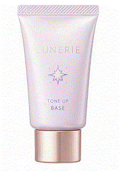
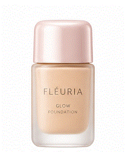
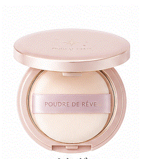
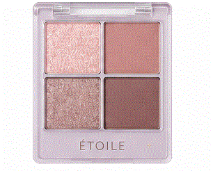
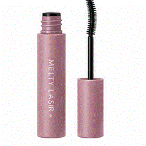
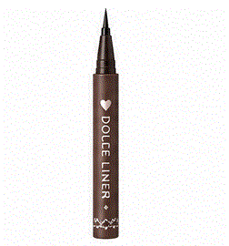
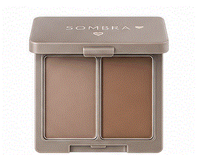
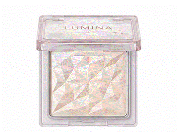
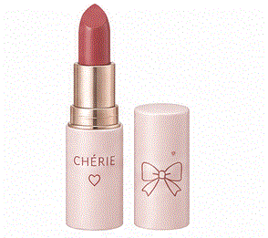

- トップ >
- 化粧品の使い方
♡化粧品の使い方
化粧品をする順番をざっくりですが、紹介します。
1 下地
厚く塗りすぎないよう、スポンジなどを使って塗ってください。

2 ファンデーショ
厚く塗ると崩れの原因になるので点置きしスポンジなどで均一に塗りましょう。

3 パウダー
皮脂崩れ防止になります。乾燥肌さんは塗りすぎ注意です。

4 アイシャドウ
瞼全体は薄い色、際は恋色で塗ります。

5 マスカラ
ビューラーでまつ毛を上げた後に使います。マスカラを縦にして左右スライドさせながら塗ると束感が出ます。

6 アイライン
目尻を少し横に引っ張りながら塗ると塗りやすいです。

7 シェーディング
顔や鼻を小さくしたいところに使います。濃く塗りすぎないようにぼかしましょう

8 ハイライト
ツヤを出したいところに使います。頬や鼻先に塗ると立体感が出ます。

9 リップ
イエベさんは、オレンジ系。ブルべさんは、ピンク系が似合います。
